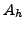
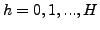
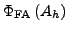
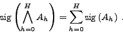
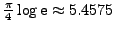
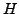
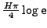
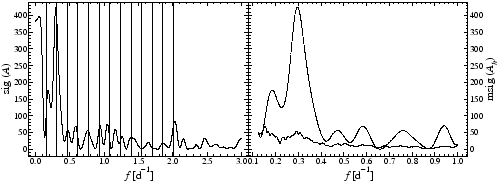

If a non-sinusoidal, but periodic process is measured, DFT does not only produce the fundamental frequency, which is the repetition rate of the non-sinusoid. The shape of the periodicity is recovered by a number of harmonics (also called overtones) the frequencies of which are integer multiples of the fundamental. In this case it may be considered insufficient to determine the exact frequency of the process by employing only the peak at the fundamental frequency and ignoring the harmonics. The keyword harmonics, followed by an integer determining the upper limit of the harmonic order, allows to compute the sig of the fundamental plus the desired number of overtones. The specification harmonics 20 forces SIGSPEC to take into account altogether 21 frequencies.
As pointed out by Reegen (2007), SIGSPEC treats False-Alarm Probabilities in a statistically clean and unbiased way. In analogy to the comb analysis introduced by Kjeldsen et al. (1995), but benefitting from the exact statistical treatment of noise, it is possible to extend the method in order to evaluate the probability of a whole set of peaks to be generated by noise simultaneously. This strategy helps to take into account a fundamental frequency plus a set of integer multiples at once and permits to evaluate the most likely solution for a non-sinusoidal signal. In addition, the Fourier Space parameters obtained for the signal components provide a fit to the data in terms of a fundamental frequency plus overtones.
Given a set of amplitude levels , , at different frequencies with associated False-Alarm Probabilities
, the probability that all amplitude levels are due to noise is given by the product of the individual False-Alarm Probabilities,
Since the sig is defined as the negative logarithm of False-Alarm Probability, the above expression leads to
|  | (15) |
Reegen (2007) evaluated the expected value of the sig (ignoring the variations with frequency and phase) to be
. Considering  different amplitude levels simultaneously rescales this expected sig, so that we obtain
. This rescaling may cause inconvenience, whence we use the mean sig of an individual peak out of this sample of fundamental plus harmonics,
The result files display only the fundamentals of the solution, and information on the harmonics is stored in additional output files. The names are generated from the name of the corresponding result file without the extension .dat, plus -h#index#.dat, where #index# refers to the index of the item in the result file. For example, the harmonics for the third component in the file result.dat are stored in the file result-h000003.dat. The files contain the harmonics in ascending order, starting with the fundamental. The three columns are

Example. The sample project harmonics illustrates the determination of a non-sinusoidal signal using the analysis of harmonics. The dataset represents (yet unpublished) space photometry of a star that exhibits surface activity. The task is to determine the rotation period of the star. For comparison, two identical versions of the time series are avalable (Fig.23). The file noharmonics.dat is used together with the file noharmonics.ini to perform a SIGSPEC analysis without harmonics and associated with the project directory noharmonics containing the output. It contains four lines:
ufreq 13
freqspacing .001
iterations 1
siglimit 0
In this constellation, SIGSPEC computes the significance spectrum between 0 and 13 cycles per day, with steps of 0.001 cycles per day (Fig.24, left panel). Only one iteration (i.e. no prewhitening) is performed. The highest peak is found at 0.296 cycles per day, which corresponds to a period of 3.38 days.
The file harmonics.dat is the same as noharmonics.dat, but the associated file harmonics.ini specifies a different setup by the lines
lfreq 0.125
ufreq 1
freqspacing .001
iterations 1
siglimit 0
harmonics 12
It is advisable not to set the lower frequency limit zero, because below the Rayleigh frequency resolution, consecutive harmonics hit the same peak and produce unreliable results. In the present case, the Rayleigh frequency resolution is 0.091 cycles per day, and to be fairly on the safe side, the lower frequency limit is adjusted to 0.125 cycles per day. Fig.24(right panel) contains the mean sig of the fundamental plus twelve harmonics vs. frequency.
The amplitudes of the fundamental and twelve harmonics are displayed vs. frequency in Fig.25. The maximum sig is found at 0.155 cycles per day, i.e., the rotation period is 6.46 days, indicating that the analysis without harmonics led to a misidentification of the first harmonic as the ``true'' rotational frequency. For comparison, the left panel of Fig.24 contains the fundamental plus harmonics found by this procedure as vertical dashed lines.
Moreover, for the analysis of harmonics, there is additional information in the screen output provided by SIGSPEC. The standard screen output for the project noharmonics contains the lines
*** preparing to run SigSpec *******************************
Rayleigh frequency resolution 0.0914470160931467
oversampling ratio 91.4470160931467433
frequency spacing 0.0010000000000000
lower frequency limit 0.0010000000000000
upper frequency limit 13.0000000000000000
Nyquist coefficient 0.9993990384615384
number of frequencies 13000
For the project harmonics, the corresponding output is richer.
*** preparing to run SigSpec *******************************
Rayleigh frequency resolution 0.0914470160931467
oversampling ratio 91.4470160931467433
frequency spacing 0.0010000000000000
lower frequency limit 0.1250000000000000
upper frequency limit 13.0000000000000000
Nyquist coefficient 1.0000000000000000
number of frequencies 12876
upper fundamental frequency 1.0000000000000000
number of fundamental frequencies 876
Although the upper frequency limit is set 1 cycle per day by the keyword ufreq, SIGSPEC has to compute the Fourier spectrum up to a frequency of 13 cycles per day in order to cover also the 12 harmonics. Two additional lines are provided corresponding to the upper limit for the fundamental frequencies, which is related to the specification by ufreq in the file harmonics.ini, and the number of fundamental frequencies.


Next: MultiFile Mode
Up: SigSpec User's Manual by
Previous: SIGSPEC AntiAlC: Anti-aliasing Correction
Contents
Piet Reegen
2009-09-23